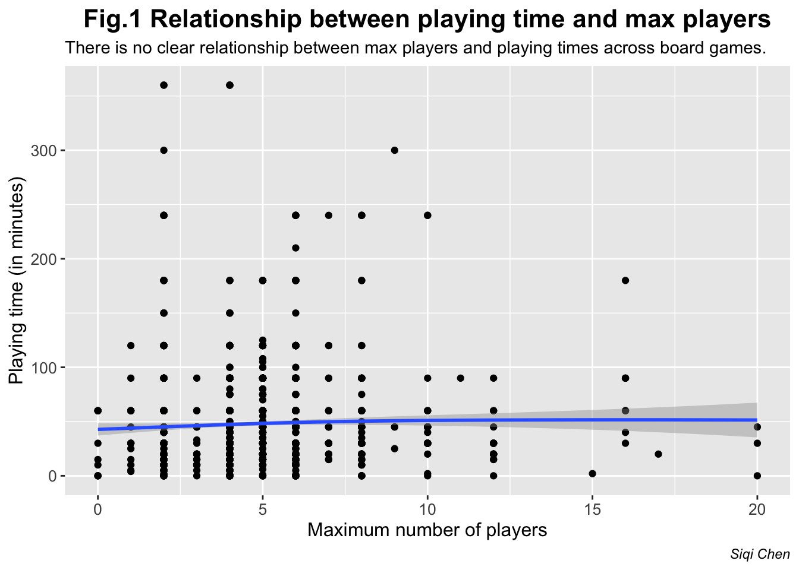
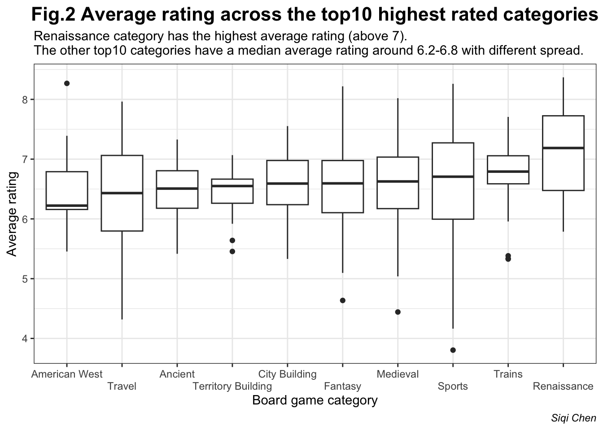
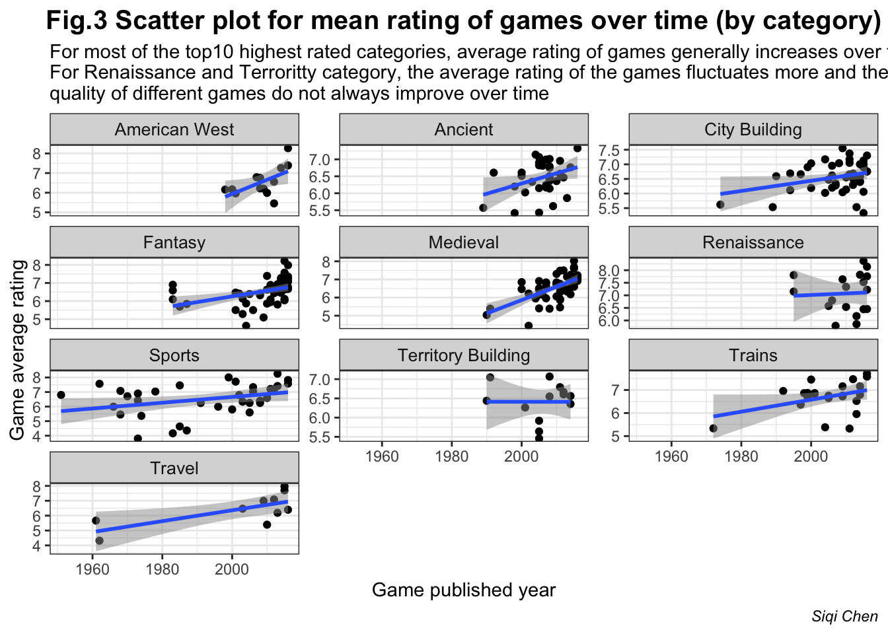
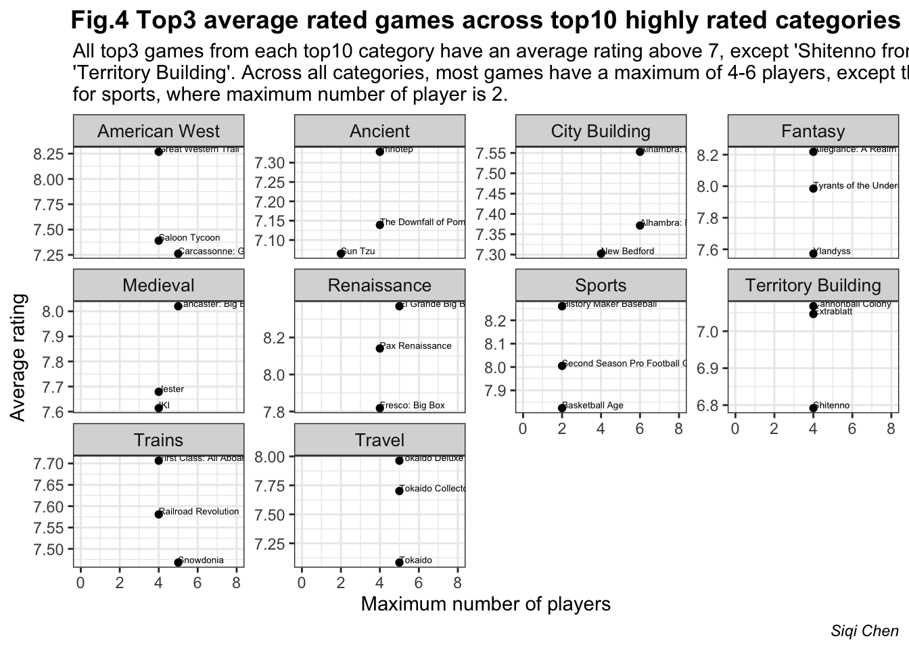

library(tidytuesdayR)
#library(here)
library(ggplot2)
library(readr)
library(tidyverse)
library(dplyr)
#library("maps")
# saves data only once (not each time you knit a R Markdown)
if(!file.exists("board_games.RDS")) {
url_csv <- 'https://raw.githubusercontent.com/rfordatascience/tidytuesday/master/data/2019/2019-03-12/board_games.csv'
board_games <- readr::read_csv(url_csv)
# save the file to RDS objects
saveRDS(board_games, file= "board_games.RDS")
}Example_analysis
Background
Motivation
As holiday season is approaching, there will be many occasion of gatherings with a group of friends (of various sizes). A gathering is more fun with board games, in addition to food and chatting. Here, I would like to figure out which game, from different categories (taking into considerations of personalities etc), is the most suited for hanging out with friends depending on party size, and ratings. Assuming that we’re all above 21 years old.
Questions to be answered: 1) Is there a relationship between max players and playing times across board games; 2) What are the top3 most highly rated (average) games for each of the top10 highly rated (average) game categories?
Intended audience
For anyone, especially those above 21 years old, who is considering buying board games for gathering or parties.
Data Origin
Here are some of the libraries I used in this analysis.
board_games <- readRDS("board_games.RDS")
as_tibble(board_games)# A tibble: 10,532 × 22
game_id descrip…¹ image max_p…² max_p…³ min_age min_p…⁴ min_p…⁵ name playi…⁶
<dbl> <chr> <chr> <dbl> <dbl> <dbl> <dbl> <dbl> <chr> <dbl>
1 1 Die Mach… //cf… 5 240 14 3 240 Die … 240
2 2 Dragonma… //cf… 4 30 12 3 30 Drag… 30
3 3 Part of … //cf… 4 60 10 2 30 Samu… 60
4 4 When you… //cf… 4 60 12 2 60 Tal … 60
5 5 In Acqui… //cf… 6 90 12 3 90 Acqu… 90
6 6 In the a… //cf… 6 240 12 2 240 Mare… 240
7 7 In Cathe… //cf… 2 20 8 2 20 Cath… 20
8 8 In this … //cf… 5 120 12 2 120 Lord… 120
9 9 Although… //cf… 4 90 13 2 90 El C… 90
10 10 Elfenlan… //cf… 6 60 10 2 60 Elfe… 60
# … with 10,522 more rows, 12 more variables: thumbnail <chr>,
# year_published <dbl>, artist <chr>, category <chr>, compilation <chr>,
# designer <chr>, expansion <chr>, family <chr>, mechanic <chr>,
# publisher <chr>, average_rating <dbl>, users_rated <dbl>, and abbreviated
# variable names ¹description, ²max_players, ³max_playtime, ⁴min_players,
# ⁵min_playtime, ⁶playing_timeThe data used in this analysis comes from TidyTuesday. The data originally comes from the Board Game Geek database. Specifically, it only contains games with at least 50 ratings and for games between 1950-2016, leaving us with 10,532 games. Here is a data dictionary explaining what each column name means.
Data wrangling
1. filter to retain board games that are assigned to only one category and retain game category that is not a NA
# head(board_games$category)
board_games$num_category_assigned <- unlist(lapply(str_split(board_games$category, ","), length))
filtered_board_games <- board_games %>% filter(num_category_assigned ==1) %>% drop_na(category)
#glimpse(filtered_board_games)
#unique(filtered_board_games$category)
#unique(filtered_board_games$min_age)
# [1] 12 8 13 10 9 14 6 11 7 16 5 0 15 18 4 3 21 Filtering board games that are only assigned to one defined game category (i.e. categories without NAs), gives us a total of 1913 games, with 71 unique categories, from 1950-2016. THIS IS THE FINAL DATAFRAME USED FOR ALL DOWNSTREAM ANALYSES. Note also that people above 21 years old are eligible to play all games included in the datasets.
2. board games - relationship between max_players and playing time
Question 1: Is there a relationship between playing time and maximum number of players across all board games?
filtered_board_games %>% filter(max_players<=25) %>% ggplot(aes(x=max_players, y=playing_time)) + geom_point() + geom_smooth() + xlab("Maximum number of players") + ylab("Playing time (in minutes)") + ggtitle("Fig.1 Relationship between playing time and max players") + labs(subtitle="There is no clear relationship between max players and playing times across board games.", caption="Siqi Chen") + theme(
plot.title = element_text(color = "black", size = 16, face = "bold",hjust = 0.5),
plot.subtitle = element_text(color = "black"),
plot.caption = element_text(color = "black", face = "italic"))+ theme(axis.text=element_text(size=10),
axis.title=element_text(size=12), strip.text.x = element_text(size =10 ))
3. Board games - category & ratings
Warning
For this analysis, we only retain categories that have at least 10 games.
Question 2: What are the rankings of average ratings across all categories from 1950-2016?
categories_at_least_10_games <- filtered_board_games %>% group_by(category) %>% summarize(total_games=n()) %>% filter(total_games>=10)
# Filtering out categories with less than 10 games leave us with 35 unique categories
categories_board_games_rating_rank <- filtered_board_games %>% filter(category %in% categories_at_least_10_games$category) %>% group_by(category) %>% summarise(mean_rating=mean(average_rating),median_rating=median(average_rating)) %>% arrange(desc(mean_rating))Question 3: What are the three lowest and highest average rated categories of board games from 1950-2016?
# the top3 highest average rated board game categories from 1950-2016
categories_board_games_rating_rank %>% head(3)# A tibble: 3 × 3
category mean_rating median_rating
<chr> <dbl> <dbl>
1 Renaissance 7.08 7.19
2 Trains 6.70 6.79
3 Medieval 6.56 6.63# the least three average rated board game categories from 1950-2016
categories_board_games_rating_rank %>% tail(3)# A tibble: 3 × 3
category mean_rating median_rating
<chr> <dbl> <dbl>
1 Children's Game 5.91 5.99
2 Pirates 5.86 6.06
3 Trivia 5.21 5.25Question 4: How does the average rating changes over time for the top10 overall highest average rated categories of board games from 1950-2016?
Note
Let’s figure out which are the top 10 highest rated categories on average from 1950-2016.
top10_categories <- categories_board_games_rating_rank %>% head(n=10) %>% pull(category)
rating_by_category <- filtered_board_games %>% filter(category %in% top10_categories) %>% select(name,max_players, category, year_published, average_rating, max_playtime)
category_ordered <- with(rating_by_category, reorder(category, average_rating, median))
rating_by_category_ordered <- rating_by_category
rating_by_category_ordered$category <- factor(rating_by_category_ordered$category, levels = levels(category_ordered))
ggplot(rating_by_category_ordered,aes(x=category, y=average_rating)) + geom_boxplot() + scale_x_discrete(guide = guide_axis(n.dodge=2)) + xlab("Board game category") + ylab("Average rating") + ggtitle("Fig.2 Average rating across the top10 highest rated categories") + theme_bw() +
labs(subtitle="Renaissance category has the highest average rating (above 7).\nThe other top10 categories have a median average rating around 6.2-6.8 with different spread.", caption="Siqi Chen") + theme(
plot.title = element_text(color = "black", size = 16, face = "bold",hjust = 0.5),
plot.subtitle = element_text(color = "black"),
plot.caption = element_text(color = "black", face = "italic")
) + theme(strip.text.x = element_text(size =10 ))
Then plot the average rating of games over time from 1950-2016, stratified by categories.
filtered_board_games %>%
filter(category %in% top10_categories) %>%
select(c(name, year_published, category, average_rating)) %>%
ggplot(aes(x=year_published, y=average_rating)) +
geom_point() + geom_smooth(method="lm", alpha=0.5) +
facet_wrap(~category, ncol=3, scales="free_y") +
xlab("Game published year") + ylab("Game average rating") + ggtitle("Fig.3 Scatter plot for mean rating of games over time (by category)") + theme_bw() + labs(subtitle="For most of the top10 highest rated categories, average rating of games generally increases over time.\nFor Renaissance and Terroritty category, the average rating of the games fluctuates more and the \nquality of different games do not always improve over time", caption="Siqi Chen") + theme(
plot.title = element_text(color = "black", size = 15, face = "bold",hjust = 0.5),
plot.subtitle = element_text(color = "black"),
plot.caption = element_text(color = "black", face = "italic")
) + theme(strip.text.x = element_text(size =10 ))
4. Within each board game category - max players and average_rating
rating_by_category_top3 <- rating_by_category %>%
filter(max_players<=16) %>%
group_by(category) %>%
top_n(n=3, wt=average_rating)
ggplot(rating_by_category_top3,aes(x=max_players, y=average_rating)) +
geom_point() +
geom_text(label=rating_by_category_top3$name,check_overlap = T,hjust=0, vjust=0, size=1.8) +
facet_wrap(category~., scales="free_y") + coord_cartesian(xlim = c(0, 8)) +
scale_color_identity() +
theme(strip.text.x = element_text(size =10 )) + xlab("Maximum number of players") + ylab("Average rating") + ggtitle("Fig.4 Top3 average rated games across top10 highly rated categories") + theme_bw() + labs(subtitle="All top3 games from each top10 category have an average rating above 7, except 'Shitenno from \n'Territory Building'. Across all categories, most games have a maximum of 4-6 players, except that \nfor sports, where maximum number of player is 2.", caption="Siqi Chen") + theme(
plot.title = element_text(color = "black", size = 14, face = "bold",hjust = 0.5),
plot.subtitle = element_text(color = "black"),
plot.caption = element_text(color = "black", face = "italic")
) + theme(strip.text.x = element_text(size =10 ))
Summary (4-6 sentences)
There is no clear relationship between max players and playing times across board games. This makes sense since playing time can also depends on many other factors, e.g. complexity of the game.
Renaissance and Trains categories are the top2 highly rated (mean and median) categories, with an average rating above 6.7.
Within each top10 highly rated (average) categories, I have figured out the top3 most highly rated (average) games (Fig.4). we can pick games, depending on people’s preferences, and the number of people based on this graph.
Functions used
dplyr |
tidyr |
ggplot2 |
|---|---|---|
mutate() |
drop_na() |
geom_point() |
select() |
geom_smooth() |
|
group_by() |
geom_text() |
|
arrange() |
geom_boxplot() |
|
summarize() |
References
Wickham, Hadley, Romain François, et al. Dplyr: A Grammar of Data Manipulation. 2022.
Wickham, Hadley. Ggplot2: Elegant Graphics for Data Analysis. Springer-Verlag New York, 2016, https://ggplot2.tidyverse.org.
Wickham, Hadley, Mara Averick, et al. “Welcome to the tidyverse.” Journal of Open Source Software, vol. 4, no. 43, 2019, p. 1686, https://doi.org/10.21105/joss.01686.